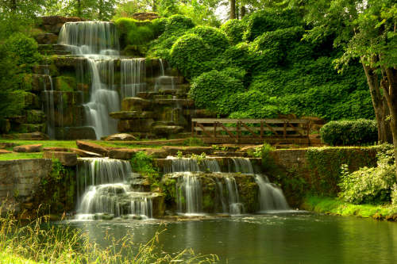

O Espaço Natural, como diz o próprio nome, é aquele em que o único agente é a natureza, ou seja, intocado. Um espaço em que os humanos não fizeram nenhum tipo de atividade.
Muitos geógrafos defendem que, atualmente, não se há mais nenhum espaço natural. Sendo tal uma teoria muito aceita na ciência da geografia.
Note que a imagem da natureza representada acima, não é uma Paisagem Natural. Um dos motivos disso é ter sido uma foto, ou seja, ela foi tirada por alguma pessoa e essa pessoa, só de estar lá, já afetou o espaço.
Clique aqui para voltar à página inicial.